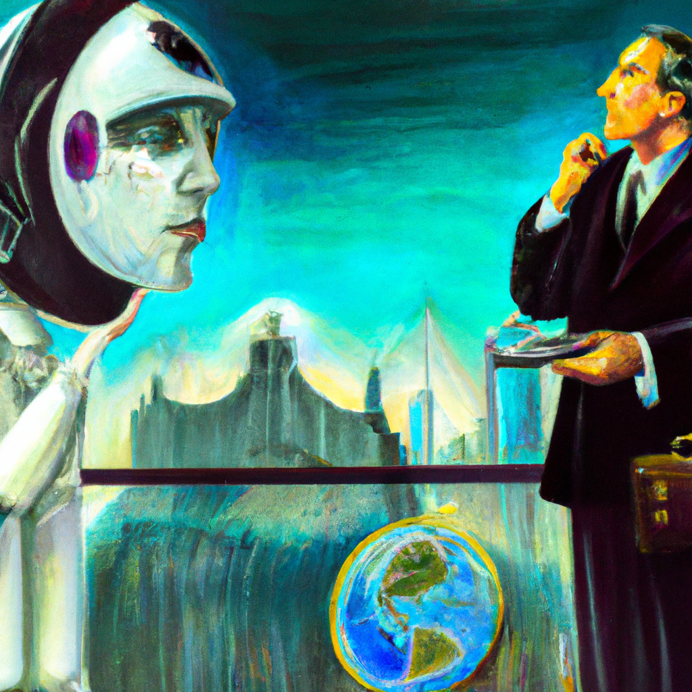

The future of business and AI
As the world of technology continues to grow, the possibilities for artificial intelligence (AI) are becoming increasingly vast. Companies are beginning to use AI to automate processes, reduce costs, and increase efficiency. But AI is also being used to develop new products and services, create new markets, and make better decisions. AI can help businesses make decisions faster and more accurately, allowing them to quickly adapt to changing market conditions.
AI can also be used to improve customer service, allowing companies to respond to customer queries quickly and accurately. AI is also being used to develop predictive models to anticipate customer needs and identify new opportunities for growth.
The use of AI in the business world is rapidly expanding and is likely to shape the future of the industry. AI can be used to create smarter products and services, generate more data-driven insights, improve customer service, and create more efficient processes. Companies that embrace AI and use it to their advantage will be in a much better position to succeed in the future.